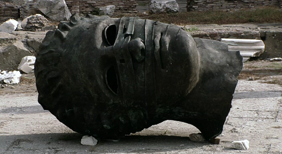
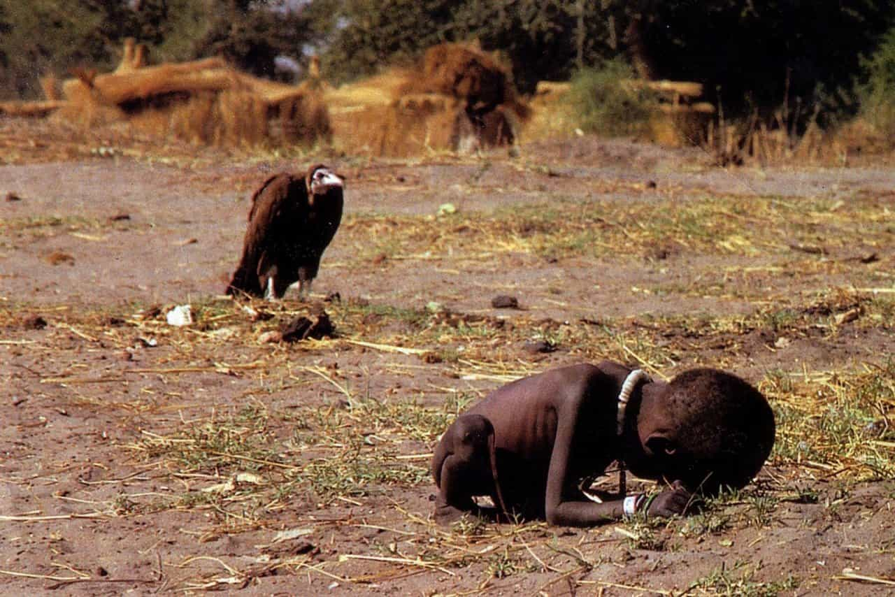

Marcus is a newly-awakened red pill hidden inside the Matrix, seeking to bring down the system from within. In the meantime he has books to read, writing to do, medieval swordsmanship to practice, and does not charge by the hour.


“We have White People Problems, in America. That’s what we have. White People Problems. You know what that is? That’s where your life is amazing, so you just make shit up to be upset about.”
–Louis C.K.
Maslow’s Pyramid—the Maslow hierarchy of needs—is a roadmap for self-improvement. It demonstrates that our basic needs—food, water, shelter, security—are prerequisites to pursuing higher ambitions for creativity and achievement. Unless you have your shit sorted out at the lower levels, trying to satisfy your intellectual desires for creativity and spontaneity is invariably building on a shaky foundation.
However, I’ve realized the pyramid is also a pretty good indicator of whether or not your society is going to make it in the long term. If a society’s priorities do not match Maslow’s pyramid, that society is probably headed for the dustbin. If you can’t provide the fundamentals of security—family, food supply, property, or resources—then by definition you won’t provide sufficient foundations to support people’s pursuit of achievement, creativity, or spontaneity. Basic needs being satisfied are prerequisites to that society supporting higher aspirations.
John Adams anticipated this ordering of priorities two hundred years ahead of Maslow:
“I must study politics and war that my sons may have liberty to study mathematics and philosophy. My sons ought to study mathematics and philosophy, geography, natural history, naval architecture, navigation, commerce, and agriculture, in order to give their children a right to study painting, poetry, music, architecture, statuary, tapestry, and porcelain.“
Adams knew that unless you first had an army and a functional government, you could not provide the security upon which an enlightened society rests.
Historically societies fail for any number of superficially unique reasons. Asking “Is America Rome?” is pointless, because the answer is no. New York is not situated on the Tiber, MMA tournaments do not end with execution of the loser, and North Dakota’s not likely to be pillaged by Visigoths raiding out of Manitoba anytime soon.
But.
While history never repeats, it does echo. And common to every society’s fall is the pyramid.
This remains so no matter how enlightened your civilization becomes. The pyramid’s structure is non-negotiable. If as a society you try to push any of your higher ambitions down the pyramid—say, making creativity a more important priority than securing food—then the society must also fail, just as a pyramid collapses without a broad base. A pyramid is not complete without an apex, but you would never use the rock at the apex as the sole foundation for the structure. Where a society—be it tribe, town, kingdom, empire, republic, or nation—fails to secure or provide for its members one or more of Maslow’s foundational needs, that society is doomed.
The sacking of Rome was a foregone conclusion because its legions had degraded: Rome could no longer supply—and thus satisfy the need for—security, and the Western Roman Empire collapsed shortly thereafter. All its artistic, philosophical, and inventive thought made not a bit of difference to the final outcome. Hellenistic Greece succumbed because its city-states could not stop warring among themselves (failure to provide security) and because its finances were flawed (failure to provide security of property).
In both cases, the failure was an attempt by a society to prioritize an ambition higher on the pyramid in preference to its foundational needs—to defy the pyramid.

Western societies as a whole have the distinction of successfully holding complete pyramids together since roughly 1700. This is rare and beautiful. Historically, the wasteland is the norm: the “high periods” of Roman and Greek culture lasted a couple of centuries combined, and were bracketed by chaos; from roughly 476 to 1450 AD western Europe was an intellectual and technological backwater.
Feminism is an existential threat to Western society because it, too, seeks to defy the pyramid. Modern feminism’s aim is to make women’s confidence and self-esteem more important—a higher priority—than society’s basic requirements for security of family, health, morality, and resources. We are seeing feminism’s effect on these four areas already.
Single mother households are apparently “families,” and often by choice. This, despite the fact that single mothers have an appalling failure rate as parents, going by the backgrounds of most people in prison. Divorce, now weighted heavily in favor of women in its consequences, has provoked men to the rational economic response: conscious, childless, and permanent bachelorhood.
Health-wise, HPV is at epidemic levels such as to demand a vaccine—predominantly due to women’s promiscuity. More obviously, obesity is at record levels—predominantly among women, so much that fat acceptance is actually a publicly discussed concept.
In terms of morals, society gives its full imprimatur to young women riding the cock carousel. This reinforces both delayed marriages and an increase in childlessness, since there is no societal judgment of a woman who sleeps around and devalues herself in traditional feminine terms. While this might eventually come back to bite feminists as a group, the collateral damage is done to Western society as a whole—just as with Hellenistic Greece, which also had declining birth rates. Societies that don’t breed generally can’t survive.
As for resources? Feminism demands their misallocation. Millions in medical resources alone are consumed every single year to indulge women’s flights of fancy. How much money has been spent on women’s “rights” to have children not when they’re young and fit, but only when their clapped-out anatomy pleads “no more”? Or the resources allocated to ripping “mistakes” out of healthy wombs, often without the father’s consent? Or the millions wasted on Botox and elective plastic surgery solely for women to wish to stay in denial about what’s happening in their mirror?

These issues are all, by definition, First World Problems because they can exist as problems only here—because generations of Western men shed blood and sweat building systems efficient enough to create a situation where higher, optional aspirations could become “necessities.” The poorest in Western society live like kings compared with the majority of human beings across recorded history. Angst about Internet speeds is possible only for people whose other basic needs have been comprehensively satisfied, for people whose privilege is so great their frame of reference can be twisted to think a latte prepared with too much milk is an existential crisis.
Modern feminism is attempting to subordinate Western society’s basic needs to women’s craving for esteem. It is attempting to turn the pyramid on its head, despite all the examples of history that tell us what happens when a society does so.
#FirstWorldProblems, believe it or not, is a very important concept in this fight. The meme is a canary in a coal mine. The person who uses it realizes, even unconsciously, that priorities in Western society are seriously out of whack because nobody concerns themselves with basic security of food, water, shelter, family. The meme slaps its recipient in the face with the message that they have lost track of what’s fundamental to civilization if not life. It carries in a nutshell everything above.
It is the perfect weapon against feminism, because modern feminism is nothing but a first world problem—one that can’t exist without basic needs satisfied, one that exists only at the sufferance of men.

Feminists hate the meme, of course. They shriek that it’s “changing the subject,” accusing its user of using Third World injustice to distract people from First World injustice.
But to point out #FirstWorldProblems is to reset the debate.
The real distraction is that which feminism conducts: straight-facedly saying that fat acceptance or single parenthood by choice are existential needs or human rights. #FirstWorldProblems slaps a person upside the head and lets them see Maslow’s hierarchy clearly again. It is the hand that turns out the magician’s sleeve, to expose what was really going on while you were looking the other way.
Read More: Decreasing Marriage Rate Is Hurting Feminism
{kind=link}